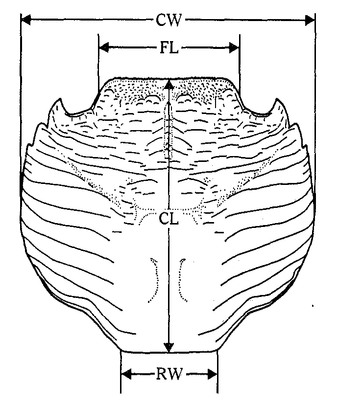
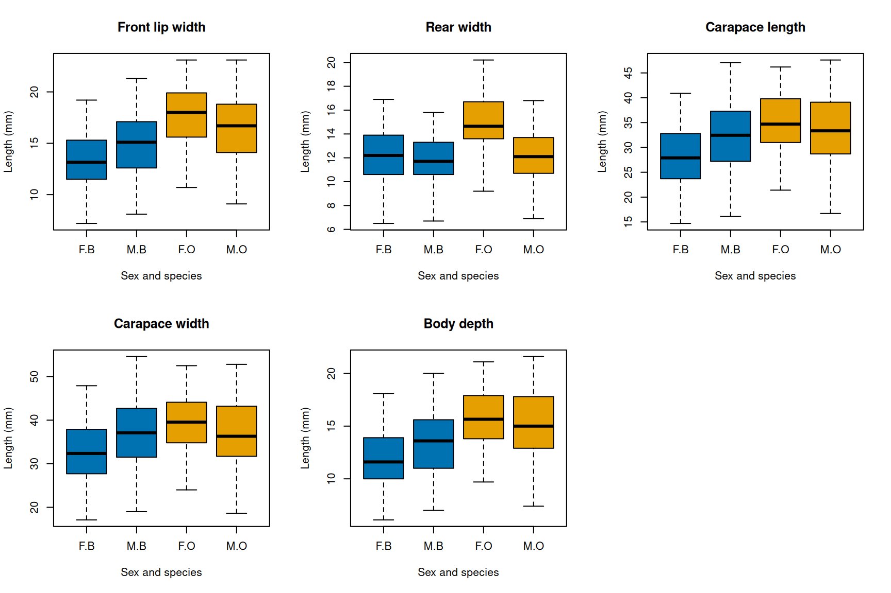
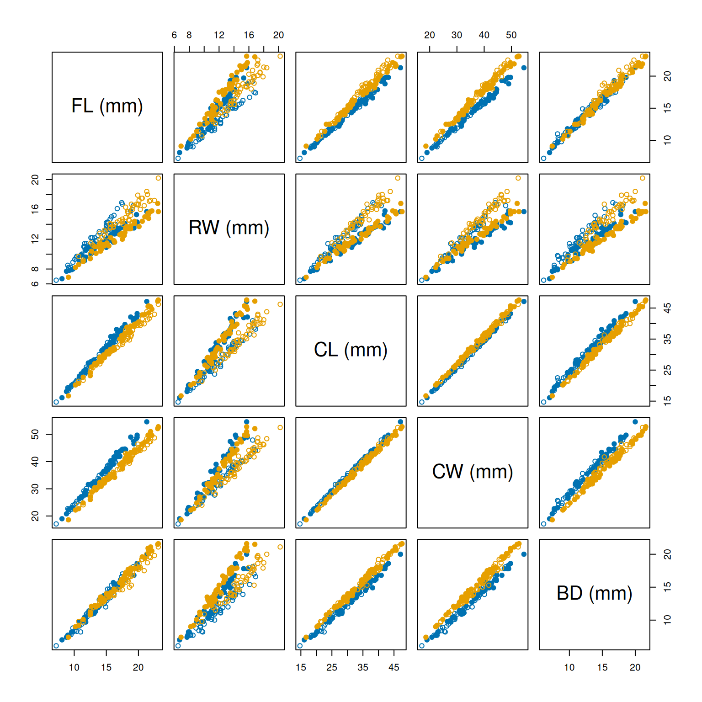
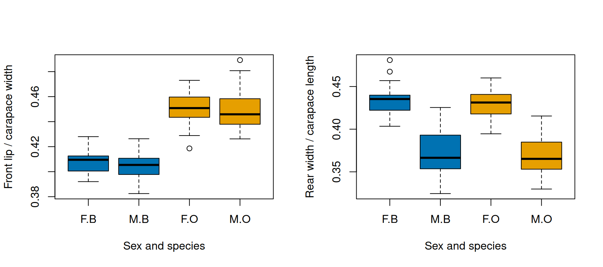
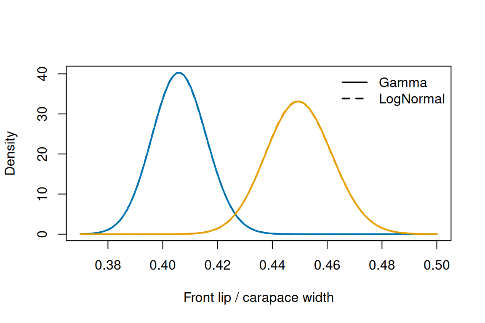
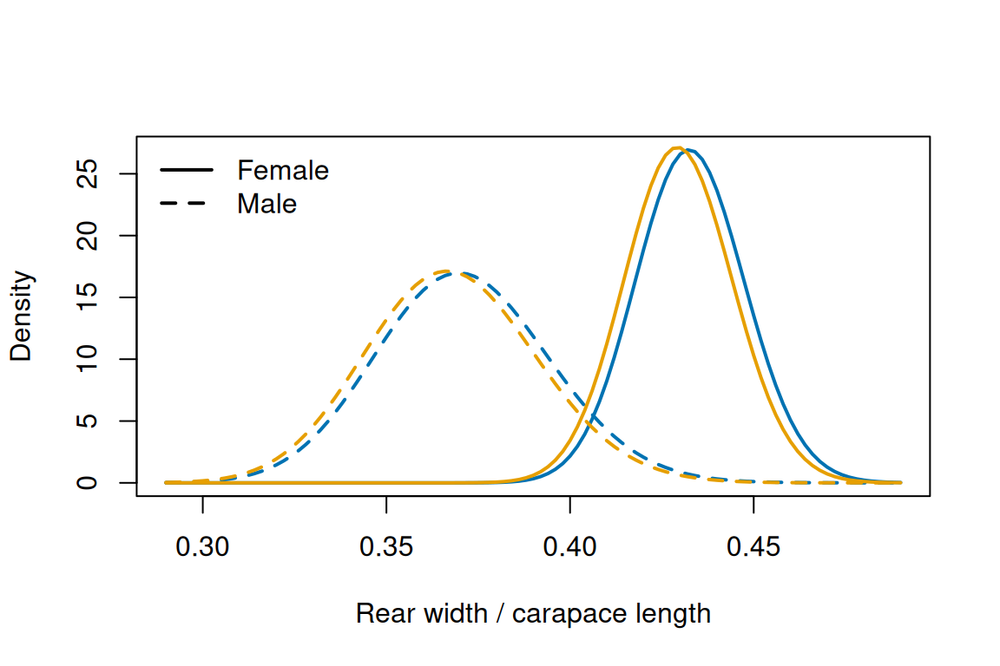

In this case study, we put Chapters 2 to 4 to work on a single data set, from the research question to the comparison of models. In the chapters, the order was always the same: a concept first, then an example chosen to illustrate it. Here we turn that around. We start with an ecological question and a data set, and we pick from the course whatever tools help us answer it. There is no new theory on this page. You will see the many small decisions that one has to make to analyse data: which variable to analyse, which distributions are worth trying, which models to compare and how to read the results. It is important to remember that there is no single way of analysing a data set, even when you are asking the same question. But there are some general principles that will help you build a well-founded and robust analysis of complex data, and I hope to illustrate them with this case study.
We start with a research question that these data could answer, and follow with an exploratory data analysis that helps us decide which variables to analyse and which models to use. From that point onwards we will follow the recipe for a fit at the end of Chapter 4 (write the model, write the NLL, fit it, check it, quantify the uncertainty, compare the models).
2 The data
The data come from a study of two species of rock crab of the genus Leptograpsus on the coast of Western Australia, by Campbell and Mahon.1 The two species look very much alike except for their colour, and they are known as the blue form and the orange form. For a long time they were regarded as colour variants of a single species, Leptograpsus variegatus. Shortly before this study, ecological and genetic work by the second author showed that they are two distinct species, which live side by side on the same shores but differ in their ecology and behaviour. To add to that evidence and to help with the identification of the two species, they set up a study to quantify the morphology of the crabs.
The study measured 50 males and 50 females of each species, 200 crabs in total, collected at Fremantle, Western Australia. The crabs were collected at night and captured on sight as the collector moved along the sampling area, and the same person (Mahon) collected and measured all of them with vernier callipers, to the nearest 0.1 mm. The data are available as the data set crabs of the package MASS, which is installed with every copy of R, so you do not need to install anything. We load the data as usual and look at the first rows:
# Measurements of 200 rock crabs (see ?MASS::crabs).data(crabs, package ="MASS")head(crabs)
sp sex index FL RW CL CW BD
1 B M 1 8.1 6.7 16.1 19.0 7.0
2 B M 2 8.8 7.7 18.1 20.8 7.4
3 B M 3 9.2 7.8 19.0 22.4 7.7
4 B M 4 9.6 7.9 20.1 23.1 8.2
5 B M 5 9.8 8.0 20.3 23.0 8.2
6 B M 6 10.8 9.0 23.0 26.5 9.8
The columns are:
sp: the species, B for the blue form and O for the orange form;
sex: F for female and M for male;
index: the number of the crab within its group, from 1 to 50 (an identifier, not a measurement);
FL: the width of the frontal region of the carapace, which the authors call the front lip (mm);
RW: the width of the rear of the carapace (mm);
CL: the length of the carapace along its midline (mm);
CW: the maximum width of the carapace (mm);
BD: the depth of the body (mm). In females, the abdomen was moved aside to measure it.
The carapace is the shell that covers the back of a crab, so four of the five measurements describe its outline as seen from above. Figure 1, from the original article, shows where each of them was taken.

Figure 1: Dorsal view of the carapace of Leptograpsus, showing the four carapace measurements: the width of the frontal region just in front of the frontal tubercles (FL), the width of the rear of the carapace (RW), the length along the midline (CL) and the maximum width (CW). Reproduced from Figure 1 of Campbell and Mahon (1974), Australian Journal of Zoology 22: 417–425.
Because the measurements were recorded to the nearest 0.1 mm, strictly speaking they can only take values on a grid with steps of 0.1 mm. These steps are tiny compared with the differences between crabs, so we treat the measurements as continuous, as we did in Chapter 2 with the flipper lengths of the penguins.
3 The research question
Every analysis starts with a question, and it is worth being honest about this: the same data set can answer many different questions, and each of them leads to a different analysis. The data that we use here are five measurements of the body of 200 rock crabs of two species and both sexes. With these data we could ask, for example:
How do the different parts of the body grow relative to each other as a crab gets bigger? This is the question of allometry, and it is about the relationships between the measurements.
How large is the sexual dimorphism (i.e., how much do the bodies of males and females differ), and does it depend on the species and on the measurement that we use?
How do the two species differ in the shape of their body? This was the original question of the paper.
Each of these three questions leads to different response variables, a different model and a different model comparison, so you cannot do “the analysis” of a data set without first deciding which question you are asking. It also means that you cannot simply ask an AI assistant to “analyse my data”: that would let the AI decide for you what you want to learn from the data.
Ideally you decide on the question before you collect the data, because the question also determines the data collection: what to measure, on how many individuals and in which groups. Choosing the question after looking at the data has a less obvious problem. Any sample has accidental features (Chapter 4 made this point about models with many parameters), and if you go looking for the most interesting pattern in a data set, you will probably find some of them and mistake them for a general ecological pattern. Looking at the data to decide how to answer a question is fine and we will do a lot of it below; changing the question to fit what the data show is where the trouble starts.
In this case study we ask: to what extent can we tell apart the two species and the two sexes of these crabs from a few measurements taken with callipers? That is, how large are the differences in body shape between the species and between the sexes, compared with the variation among the crabs of each group?
Why would anyone care? For the two species, the question has a real history. Once the blue and the orange forms were recognised as separate species, the old museum specimens to which the existing names of these crabs are attached had to be examined, to decide which name belongs to which species. However, crabs that have been preserved in chemicals lose their colour, so these specimens could not be identified by the one feature that everyone used to tell the species apart. Campbell and Mahon collected these data precisely to find a way of identifying the species independently of colour, and a clear difference in body shape would also add to the evidence that the two forms are separate species. The same need exists in the field: colour is a judgement made by eye, on which different observers (or the same observer in different light) may not agree, whereas a measurement with callipers is quick, cheap and repeatable.
Sex enters the question for two reasons. The first is practical: to sex a crab you have to catch it and turn it over to look at its underside, so measurements that identify the sex would be useful as well. The second is that sexual dimorphism gets in the way of comparing the species. If males and females differ in shape, a description of a species that mixes the two sexes describes neither of them well, so we have to take sex into account to see the differences between the species clearly (this is also where the design of the study helps, as we will see in the next section).
Note how the question is phrased. We do not ask “is there a significant difference between the species?”, because with enough crabs almost any difference will be detected and the answer tells us nothing about whether the measurements are useful. We ask how large the differences are compared with the variation within each group, because that is what determines how well the measurements can tell the groups apart. This is a question about whole distributions, and distributions are exactly what Chapters 2 to 4 taught us to describe, fit and compare. Campbell and Mahon answered their version of the question with multivariate methods that combine all five measurements at once, which are beyond this course. We will use the tools of Chapters 2 to 4 instead, and at the end we will compare our answer with theirs.
4 Exploratory data analysis
To see how the crabs are distributed over the groups, we count them for every combination of species and sex with table(), which you used in Chapter 3 to count seedlings in quadrats. With two variables, table() counts the combinations and arranges them in rows and columns:
# Number of crabs for each combination of species (rows) and sex (columns).table(crabs$sp, crabs$sex)
F M
B 50 50
O 50 50
There are exactly 50 crabs of each sex in each species. This is a balanced design with two factors (species and sex), and every combination of the two factors is present. A design like this is what you would plan for our question: every group has the same number of crabs, so every group is described with similar precision, and having all four combinations allows us to look at the differences between the sexes within each species (and the other way around). It also means that the numbers in the table were fixed by the study, so they tell us nothing about how common each group is on the shore.
4.1 A first look at the measurements
The natural first plot for comparing a measurement across groups is a boxplot, which you met in the Chapter 1 practical. The formula CW ~ sex + sp asks for one box for every combination of sex and species. We draw one panel per measurement, filling the boxes with blue and orange for the two species. Before plotting, we store the colours (in the order of the levels of sp, blue first) and, for later, the symbols that we will use for females (open circles) and males (filled circles):
# Colours for the blue and orange species, and symbols for females (open) and males# (filled), in the order of the levels of sp and sex.form_colours =c("#0072B2", "#E69F00")sex_symbols =c(1, 19)
The plot itself loops over the five measurements. Inside the loop, crabs[, measurements[i]] selects one column of the data frame by its name:
# Names of the measurement columns and titles for the panels.measurements =c("FL", "RW", "CL", "CW", "BD")measurement_titles =c("Front lip width", "Rear width", "Carapace length","Carapace width", "Body depth")# One panel per measurement; restore the graphics settings afterwards.old_par =par(no.readonly =TRUE)par(mfrow =c(2, 3))for (i in1:5) {boxplot(crabs[, measurements[i]] ~ sex + sp, data = crabs,col =rep(form_colours, each =2),main = measurement_titles[i],xlab ="Sex and species", ylab ="Length (mm)")}par(old_par)

Figure 2: The five measurements of the crabs for each combination of sex (F, M) and species (B, O). Blue and orange boxes are the blue and the orange species.
The first thing to notice is how much the boxes overlap (this is why we need statistics). In every group the crabs span a wide range of sizes, from about 15 mm to almost 50 mm of carapace length, so the crabs in the data are of many different ages. There are some differences between the groups (the blue females tend to be the smallest crabs and the orange females have a wider rear), but they are small compared with the variation within each group. If we had to guess the group of a crab from one of these measurements alone, we would be wrong very often.
We should also be careful with what these differences mean. A group of crabs with a larger median carapace may contain larger animals because of its biology, or simply because more large crabs of that group happened to be caught. The crabs were captured on sight, and we do not know how the size of a crab affected its chance of being seen and caught, so differences in overall size are a weak basis for an answer to our question.
4.2 Relationships between the measurements
Because all five measurements were taken on the same crab, we can also look at how they vary together. The function pairs(), which you used in the Chapter 1 practical on the iris flowers, draws a scatter plot for every pair of measurements. We colour the points by species and use the symbols for the sexes:
# One scatter plot for every pair of measurements, coloured by species, with symbols by sex.pairs(crabs[, measurements],labels =c("FL (mm)", "RW (mm)", "CL (mm)", "CW (mm)", "BD (mm)"),col = form_colours[as.numeric(crabs$sp)],pch = sex_symbols[as.numeric(crabs$sex)])

Figure 3: Pairs of measurements of the 200 crabs (mm). Blue and orange points are the two species; open circles are females and filled circles are males.
The points of every panel lie close to a line: a crab with a long carapace also has a wide carapace, a deep body and a wide front lip. In the language of Chapter 2, the measurements are strongly correlated, and the reason is simple: they all grow as the crab grows. If our question were about allometry, this is the figure we would study in detail. For our question the strong correlation tells us something different, namely that the five measurements mostly repeat the same information, the size of the crab.
Look more closely, though, and the groups separate within the panels. In the panel of the front lip against the carapace width (first row, fourth column), the orange crabs lie above the blue ones: at the same width of the carapace, an orange crab has a wider front lip. In the panel of the rear width against the carapace length (second row, third column), the open circles lie above the filled ones: at the same length, a female has a wider rear than a male. In other words, the groups differ in the proportions of their bodies, their shape, more clearly than in any single measurement. Their size mixes the shape with the age of the crab, and the scatter plots take the age out by comparing crabs of the same size.
4.3 From size to shape
A simple way to describe the shape of a crab with one number is the ratio of two measurements. If two measurements grow in proportion, their ratio is the same for a small and a large crab, so it removes the size and keeps the shape. Based on the scatter plots, we calculate two ratios: the width of the front lip divided by the carapace width, which seemed to separate the species, and the rear width divided by the carapace length, which seemed to separate the sexes. A ratio of two lengths has no units.
We add the two ratios as new columns with mutate() from the package dplyr, as in the Chapter 1 practical:
library(dplyr)# Front lip width relative to carapace width, and rear width relative to carapace length.crabs =mutate(crabs,fl_cw_ratio = FL / CW,rw_cl_ratio = RW / CL)
We draw the two ratios with the same boxplots as before:
old_par =par(no.readonly =TRUE)par(mfrow =c(1, 2))boxplot(fl_cw_ratio ~ sex + sp, data = crabs, col =rep(form_colours, each =2),xlab ="Sex and species", ylab ="Front lip / carapace width")boxplot(rw_cl_ratio ~ sex + sp, data = crabs, col =rep(form_colours, each =2),xlab ="Sex and species", ylab ="Rear width / carapace length")par(old_par)

Figure 4: Two ratios of measurements for each combination of sex (F, M) and species (B, O): the width of the front lip relative to the carapace width (left) and the rear width relative to the carapace length (right).
This looks very different from Figure 2. The ratio of the front lip to the carapace width separates the two species with hardly any overlap, while the two sexes within each species are very similar. The ratio of the rear width to the carapace length does the opposite: it separates the sexes and hardly differs between the species. To put numbers on the difference between the groups and the variation within them, we calculate the mean and the standard deviation of both ratios in each group with group_by() and summarise(), again from the Chapter 1 practical:
# Mean and standard deviation of the two ratios in each combination of species and sex.crab_groups =group_by(crabs, sp, sex)summarise(crab_groups,mean_fl_cw =mean(fl_cw_ratio), sd_fl_cw =sd(fl_cw_ratio),mean_rw_cl =mean(rw_cl_ratio), sd_rw_cl =sd(rw_cl_ratio))
# A tibble: 4 × 6
# Groups: sp [2]
sp sex mean_fl_cw sd_fl_cw mean_rw_cl sd_rw_cl
<fct> <fct> <dbl> <dbl> <dbl> <dbl>
1 B F 0.408 0.00903 0.433 0.0145
2 B M 0.405 0.0106 0.371 0.0256
3 O F 0.451 0.0106 0.430 0.0154
4 O M 0.449 0.0136 0.368 0.0219
The means of the ratio of the front lip differ by about 0.04 between the species, which is about three to five times the standard deviation within a group. The means of the ratio of the rear width differ by about 0.06 between the sexes, but the standard deviation of the males is larger than that of the females, so the two sexes overlap more than the two species do.
4.4 What we take forward
The exploration has not answered our question, but it has told us how to answer it. The absolute measurements are dominated by the size of the crabs and are of little use on their own. Ratios of measurements describe the shape, and the two ratios above are good candidates for the response variable: the width of the front lip relative to the carapace width for the species, and the rear width relative to the carapace length for the sexes. Both are positive continuous variables, so the Normal, LogNormal and Gamma distributions of Chapter 2 and the Supplement are all possible models for them.
5 The difference between the species
We now apply the recipe for a fit of Chapter 4 to the first half of our question: how well can we tell the two species apart? The response variable is the ratio of the front lip to the carapace width, the ratio that separated the species in Figure 4. In that figure, the males and the females of each species have almost the same distribution of this ratio, so for this comparison we can ignore sex and treat the 100 crabs of each species as one sample. This simplifies our life a lot: we have two groups instead of four, and every model has fewer parameters. (If the sexes differed in this ratio, we would have to include both factors in the model.)
We proceed in four steps. First, we choose a distribution for the ratio by comparing two candidates with AIC, separately for each species. Second, we write a model in which the difference between the means of the two species is itself a parameter, and use AIC to decide whether we need to account for different variation within each species. Third, we estimate the difference between species with its confidence intervals. Finally, we check with a simulation that the estimate and its intervals behave as the theory of Chapter 4 promises.
5.1 The model
Let \(Y_i\) be the ratio of the front lip to the carapace width of crab \(i\). Within each species, we treat the ratios as i.i.d.: every crab was caught and measured once, and its ratio tells us nothing about the ratio of the next crab. (Crabs caught on the same night or on the same stretch of rock could be more alike than crabs caught far apart; we ignore this here, and Chapter 7 shows how such groups could be modelled.)
The ratio is a positive continuous variable, so we try the two distributions of Chapter 2 that are made for such variables: the Gamma and the LogNormal distributions. As recommended in the Supplement, we parameterise both by their mean \(\mu\). For the second parameter we use the coefficient of variation (CV), the standard deviation divided by the mean, \(c=\sqrt{\operatorname{Var}(Y)}/\mu\). For positive measurements the spread tends to grow with the mean (bigger things vary more in absolute terms), so the relative variation is a natural way to describe it, and it lets us compare the two species, whose means differ, on the same footing. Both distributions can be written with \(\mu\) and \(c\):
For the Gamma distribution the standard deviation is \(c\mu\), and the shape is \(k=1/c^2\), so the coefficient of variation is the \(1/\sqrt{k}\) of the Supplement. The function dgamma2() of RTMBdist takes the mean and the standard deviation, so we give it mean = mu and sd = cv * mu.
For the LogNormal distribution the mean and the variance in the Supplement give \(c^2=e^{\sigma^2}-1\), so
where \(\sigma\) (sdlog) and \(\mu_{\log}\) (meanlog) are the standard deviation and the mean of \(\log(Y)\), the arguments of dlnorm().
5.2 Gamma or LogNormal?
We load RTMB and RTMBdist as in Chapter 4 and split the ratios into the two species:
# Load RTMB first and RTMBdist second.library(RTMB)library(RTMBdist)# Ratio of the front lip to the carapace width for each species (no units).blue_ratio = crabs$fl_cw_ratio[crabs$sp =="B"]orange_ratio = crabs$fl_cw_ratio[crabs$sp =="O"]
The two NLLs take the mean and the coefficient of variation on the log scale, because both are positive (Chapter 4), and the ratios as x. The LogNormal NLL converts \(\mu\) and \(c\) into meanlog and sdlog with the two equations above:
# Gamma model with mean mu and coefficient of variation cv.gamma_nll =function(parms, data) {getAll(parms, data) mu =exp(log_mu) cv =exp(log_cv)-sum(dgamma2(x = x, mean = mu, sd = cv * mu, log =TRUE))}# LogNormal model with mean mu and coefficient of variation cv.lognormal_nll =function(parms, data) {getAll(parms, data) mu =exp(log_mu) cv =exp(log_cv)# Parameters of the distribution of log(x). sdlog =sqrt(log(1+ cv^2)) meanlog =log(mu) - sdlog^2/2-sum(dlnorm(x = x, meanlog = meanlog, sdlog = sdlog, log =TRUE))}
We need four fits (two distributions for each of two species), and every fit repeats the same two steps of the recipe: process the NLL with MakeADFun() and minimise it with optim(). Instead of copying these lines four times, we put them in a function, as you learnt to do in the Chapter 1 practical. The function fit_ratio() takes an NLL and the ratios of one species, and returns the result of optim(). The starting values are a mean of 0.4, read from Figure 4, and a coefficient of variation of 0.05, a rough guess (any values from which the optimiser reaches the maximum will do):
# Connect a likelihood to a data set.cmb =function(f, d) function(p) f(p, d)# Process an NLL for the ratios x of one species and minimise it.fit_ratio =function(nll, x) { obj =MakeADFun(cmb(nll, list(x = x)),list(log_mu =log(0.4), log_cv =log(0.05)),silent =TRUE )optim(par = obj$par, fn = obj$fn, gr = obj$gr, method ="BFGS")}blue_gamma_fit =fit_ratio(gamma_nll, blue_ratio)blue_lognormal_fit =fit_ratio(lognormal_nll, blue_ratio)orange_gamma_fit =fit_ratio(gamma_nll, orange_ratio)orange_lognormal_fit =fit_ratio(lognormal_nll, orange_ratio)# Convergence codes (0 = normal stop) and the Gamma estimates of mu and cv.c(blue_gamma_fit$convergence, blue_lognormal_fit$convergence, orange_gamma_fit$convergence, orange_lognormal_fit$convergence)
All four fits converged. Before comparing the models, it is worth noticing how small the coefficients of variation are: about 0.024 for the blue species and 0.027 for the orange species, so the standard deviation of the ratio is less than 3% of its mean. We will come back to this in a moment.
We compare the two distributions with AIC within each species (an AIC can only be compared between models fitted to the same observations, so the blue and the orange crabs form two separate comparisons). As in Chapter 4, the maximum log-likelihood is minus the element value of the fit:
# Maximised log-likelihood, number of parameters K and AIC of the four fits.distribution_table =data.frame(species =c("blue", "blue", "orange", "orange"),distribution =c("Gamma", "LogNormal", "Gamma", "LogNormal"),K =2,loglik =-c(blue_gamma_fit$value, blue_lognormal_fit$value, orange_gamma_fit$value, orange_lognormal_fit$value))distribution_table$aic =2* distribution_table$K -2* distribution_table$loglikdistribution_table
species distribution K loglik aic
1 blue Gamma 2 319.7130 -635.4260
2 blue LogNormal 2 319.6700 -635.3399
3 orange Gamma 2 299.9814 -595.9627
4 orange LogNormal 2 300.1396 -596.2792
The Gamma model has the lower AIC for the blue crabs and the LogNormal model for the orange crabs, but the differences are 0.09 and 0.32 units, which means that the data cannot tell the two distributions apart. (AICc would not change this: both models have the same number of parameters and are fitted to the same number of crabs, so they receive the same correction.) The reason is the small coefficient of variation. The Gamma and the LogNormal distributions differ mostly in how skewed they are, and with a relative variation of 2–3% both are nearly symmetric bell curves that are almost impossible to distinguish. We can see this by drawing the fitted densities of the two distributions for each species with curve(). The LogNormal density needs the conversion from \(\mu\) and \(c\) every time, so we put it in a short function, dlnorm_cv():
# LogNormal density with mean mu and coefficient of variation cv.dlnorm_cv =function(x, mu, cv) { sdlog =sqrt(log(1+ cv^2))dlnorm(x, meanlog =log(mu) - sdlog^2/2, sdlog = sdlog)}# Estimates of mu (first element) and cv (second element) of the four fits.blue_gamma =exp(blue_gamma_fit$par)blue_lognormal =exp(blue_lognormal_fit$par)orange_gamma =exp(orange_gamma_fit$par)orange_lognormal =exp(orange_lognormal_fit$par)curve(dgamma2(x, mean = blue_gamma[1], sd = blue_gamma[2] * blue_gamma[1]),from =0.37, to =0.50, col = form_colours[1], lwd =2,xlab ="Front lip / carapace width", ylab ="Density")curve(dlnorm_cv(x, mu = blue_lognormal[1], cv = blue_lognormal[2]),add =TRUE, col = form_colours[1], lwd =2, lty =2)curve(dgamma2(x, mean = orange_gamma[1], sd = orange_gamma[2] * orange_gamma[1]),add =TRUE, col = form_colours[2], lwd =2)curve(dlnorm_cv(x, mu = orange_lognormal[1], cv = orange_lognormal[2]),add =TRUE, col = form_colours[2], lwd =2, lty =2)legend("topright", legend =c("Gamma", "LogNormal"), lwd =2, lty =c(1, 2), bty ="n")

Figure 5: Fitted Gamma (solid) and LogNormal (dashed) densities of the ratio of the front lip to the carapace width for the blue and the orange species.
For each species, the two estimated density functions lie on top of each other. So the choice between them does not matter for our question, and we continue with the Gamma distribution, because dgamma2() takes the mean and the standard deviation directly and its NLL is a little simpler. (If you repeat the next steps with the LogNormal distribution, you will get practically the same estimates and standard errors.) Note that this is a conclusion about these data. For a variable with a larger relative variation, the two distributions differ more in shape (both are skewed to the right, but not in the same way), and the data may be able to tell them apart. Also note that, with such a small variation, you could get away with a Normal distribution, because the probability of a negative value would be extremely low. We stay with the Gamma distribution, though, because we will not always be so lucky with our data.
5.3 The difference between the means as a parameter
So far each species had its own mean. For our question, however, the interesting quantity is the difference between the two means, and it is convenient to make that difference a parameter of the model. We take the blue species as the reference (the “control”) and describe the orange species by how much its mean differs from it (the “effect”):
\[
\mu_i=\mu_{\mathrm{B}}+\delta\,o_i,
\]
where \(\mu_i\) is the mean ratio of crab \(i\), \(\mu_{\mathrm{B}}\) is the mean ratio of the blue species, \(\delta\) is the difference between the mean ratio of the orange species and that of the blue species, and \(o_i\) is 1 if crab \(i\) is orange and 0 if it is blue2. For a blue crab the mean is \(\mu_{\mathrm{B}}\) and for an orange crab it is \(\mu_{\mathrm{B}}+\delta\). This is only a different way of writing the two means, so it does not change how well the model fits the data. The advantage is that \(\delta\) is now a parameter: its estimate comes with a standard error from sdreport() and a likelihood profile from tmbprofile(), which is exactly what we need to say how large the difference is and how precisely we know it.
This also means that we do not need to fit a model without a difference (\(\delta=0\), one Gamma distribution for all the crabs) and compare it with AIC. That comparison would only tell us whether a model with a difference is better than one without, which is the question “is there a difference?” that we decided not to ask. The confidence interval of \(\delta\) tells us much more: which sizes of the difference the data support, and, as a by-product, whether a difference of zero is among them. Whenever the question is about the size of an effect, put the effect in the model as a parameter and look at its estimate and interval, rather than at a comparison between a model with the effect and one without.
The mean \(\mu_{\mathrm{B}}\) is positive, so we estimate its logarithm as before. The difference \(\delta\) is not transformed: we do not want to assume in advance which species has the larger ratio, so \(\delta\) must be allowed to take any value3. In R, \(o_i\) is a vector of zeros and ones, which we create by comparing the species with "O" and turning the result into numbers:
# 1 for an orange crab and 0 for a blue crab.is_orange =as.numeric(crabs$sp =="O")
What about the variation within each species? We found a slightly larger coefficient of variation for the orange crabs (0.027 against 0.024), and we have to decide whether both species share one coefficient of variation or each has its own. This matters for our question: the standard error of \(\hat\delta\) depends on how variable the crabs of each species are, so a model with the wrong variation could give us a misleading idea of how precisely we know \(\delta\). We write both models. The first one has a single parameter log_cv; we also mark the data with OBS(), so that we can simulate from this model at the end of the section, as in Chapter 4:
# Gamma model with a difference delta between the mean ratios of the orange and the blue# species, and one coefficient of variation for both species.species_nll =function(parms, data) {getAll(parms, data)# Mark the data as observations, so that they can be simulated. x =OBS(x) mu =exp(log_mu_blue) + delta * is_orange cv =exp(log_cv)-sum(dgamma2(x = x, mean = mu, sd = cv * mu, log =TRUE))}
The second model has one coefficient of variation per species. In the line for cv, c(log_cv_blue, log_cv_orange) is a vector with the two parameters, and we select an element of it for every crab by its position, as in the Chapter 1 practical. The position is is_orange + 1, which is 1 for a blue crab and 2 for an orange crab, so every crab gets the coefficient of variation of its own species and cv becomes a vector of 200 values:
# The same model with one coefficient of variation per species.species_cv_nll =function(parms, data) {getAll(parms, data) mu =exp(log_mu_blue) + delta * is_orange# Element 1 (blue) or 2 (orange) for every crab. cv =exp(c(log_cv_blue, log_cv_orange)[is_orange +1])-sum(dgamma2(x = x, mean = mu, sd = cv * mu, log =TRUE))}
Both models use the ratios of all 200 crabs and the vector is_orange. We fit them from the same starting values as before, with \(\delta=0\) (no difference) as the starting value of the difference:
# Data and starting values shared by both models.species_data =list(x = crabs$fl_cw_ratio, is_orange = is_orange)species_start =list(log_mu_blue =log(0.4), delta =0, log_cv =log(0.05))# One coefficient of variation.species_obj =MakeADFun(cmb(species_nll, species_data), species_start, silent =TRUE)species_fit =optim(par = species_obj$par, fn = species_obj$fn, gr = species_obj$gr,method ="BFGS")# One coefficient of variation per species.species_cv_obj =MakeADFun(cmb(species_cv_nll, species_data),list(log_mu_blue =log(0.4), delta =0, log_cv_blue =log(0.05),log_cv_orange =log(0.05)),silent =TRUE)species_cv_fit =optim(par = species_cv_obj$par, fn = species_cv_obj$fn,gr = species_cv_obj$gr, method ="BFGS")c(species_fit$convergence, species_cv_fit$convergence)
[1] 0 0
We compare the two models with AIC:
# Maximised log-likelihood, number of parameters K and AIC of the two models.species_table =data.frame(model =c("one CV", "one CV per species"),K =c(3, 4),loglik =-c(species_fit$value, species_cv_fit$value))species_table$aic =2* species_table$K -2* species_table$loglikspecies_table$delta_aic = species_table$aic -min(species_table$aic)species_table
model K loglik aic delta_aic
1 one CV 3 619.2411 -1232.482 0.000000
2 one CV per species 4 619.6944 -1231.389 1.093563
A separate coefficient of variation for each species raises the log-likelihood by less than half a unit, which does not pay for the extra parameter, so the model with a single coefficient of variation has the lower AIC (by 1.1 units; with AICc the difference would be 1.2 units). In other words, the blue and the orange crabs seem to have very similar coefficients of variation, and a second coefficient of variation is not worth its extra parameter.
We can also set AIC aside and check directly whether the choice affects our answer, by looking at the estimate of \(\delta\) and its standard error in both models4:
# Estimate and standard error of delta in the two models with a difference.rbind(one_cv =summary(sdreport(species_obj))["delta", ],cv_per_species =summary(sdreport(species_cv_obj))["delta", ])
The two models give the same estimate and almost the same standard error, so the choice does not matter for our question and we continue with the simpler model, with one coefficient of variation.
5.4 How large is the difference?
The estimates and their standard errors come from sdreport(), as in Chapter 4:
# Estimates and standard errors on the scale that was optimised.species_summary =summary(sdreport(species_obj))species_summary
The parameter \(\delta\) was not transformed, so its Wald interval is calculated directly as the estimate plus and minus 1.96 standard errors. For the likelihood profile interval, we profile delta with TMB::tmbprofile() and find the crossings of the cutoff with confint(), as in Chapter 4:
# Wald interval for delta.critical_value =qnorm(p =0.975)wald_delta = species_summary["delta", "Estimate"] +c(-1, 1) * critical_value * species_summary["delta", "Std. Error"]# Likelihood profile interval for delta (confint() returns a matrix with one row).species_profile_delta = TMB::tmbprofile(species_obj, name ="delta", trace =FALSE)profile_delta =confint(species_profile_delta)[1, ]rbind(wald_delta, profile_delta)
The estimated difference is \(\hat\delta=0.0437\) and both intervals go from 0.041 to 0.047. The two intervals agree to four decimals because, with 200 crabs, the log-likelihood of \(\delta\) is very close to a parabola, which is the condition under which the Wald interval is accurate (Chapter 4). So the front lip of an orange crab is wider, relative to its carapace, by about 0.044 times the carapace width. For a crab with a carapace 40 mm wide, this is about 1.7 mm, which is easy to measure with callipers that read to 0.1 mm. The interval is narrow compared with the difference itself, so the data determine the difference precisely. It is also far from zero: the differences that the data support (at the 95% level) lie between 0.041 and 0.047, so we know that the species differ without fitting a model in which they do not.
Keep in mind what \(\delta\) describes: the difference between the means of the two species, that is, between the average blue crab and the average orange crab. The interval tells us how precisely we know this difference between means, not how different two individual crabs are. Individual crabs vary around the mean of their species, so a particular orange crab can still have a smaller ratio than a particular blue crab (the two distributions in Figure 5 overlap a little).
5.5 Checking the estimator by simulation
The standard error and both intervals rely on the large-sample results of Chapter 4: approximately, the estimator is unbiased, its standard deviation across hypothetical samples is the standard error that sdreport() calculates, and a 95% interval contains the parameter in 95% of the samples. With 100 crabs in each species we expect these approximations to be good, but we can check them, because we can simulate data from our model with a value of \(\delta\) that we know.
We simulate 1,000 hypothetical samples with the same design (100 blue and 100 orange crabs) from the fitted model, using the estimates as the parameters. We marked the data in species_nll() with OBS(), so species_obj$simulate() draws one hypothetical sample of 200 ratios. Each sample is then fitted by maximum likelihood, starting from the same values as the fit to the real data, and we keep the estimate of \(\delta\) and its standard error:
# Hypothetical samples of 100 blue and 100 orange crabs from the fitted model.set.seed(seed =417)n_samples =1000sim_delta =rep(NA, n_samples)sim_se =rep(NA, n_samples)for (i inseq_len(n_samples)) {# One hypothetical sample at the estimates for the crabs. sim_ratio = species_obj$simulate(species_fit$par)$x# Maximum likelihood, starting from the same values as for the crabs. sim_obj =MakeADFun(cmb(species_nll, list(x = sim_ratio, is_orange = is_orange)), species_start,silent =TRUE ) sim_fit =optim(par = sim_obj$par, fn = sim_obj$fn, gr = sim_obj$gr, method ="BFGS") sim_summary =summary(sdreport(sim_obj)) sim_delta[i] = sim_summary["delta", "Estimate"] sim_se[i] = sim_summary["delta", "Std. Error"]}
The value of \(\delta\) used to simulate is the estimate for the crabs. We compare it with the mean of the 1,000 estimates (bias), compare the standard deviation of the estimates with the average standard error, and calculate the fraction of Wald intervals that contain it (coverage):
# Value of delta used to simulate.delta_sim = species_fit$par[["delta"]]# Bias: mean of the estimates minus the value used to simulate.mean(sim_delta) - delta_sim
[1] -2.547022e-05
# Standard deviation of the estimates and average standard error.c(sd_estimates =sd(sim_delta), mean_se =mean(sim_se))
The estimator behaves as promised. The bias is \(-0.00003\), less than 0.1% of \(\delta\) and negligible compared with the standard error. The standard deviation of the estimates (0.00151) is close to the average standard error (0.00155), so sdreport() describes the uncertainty of \(\hat\delta\) well. The Wald interval contains the value used to simulate in 95.4% of the samples, as close to 95% as we can expect from 1,000 samples (with another seed the coverage would be a little different). We did not check the profile interval, because for these data it is practically the same as the Wald interval.
Keep in mind what this simulation does and does not tell us. The hypothetical samples were drawn from our model, so the simulation shows that maximum likelihood estimation and the intervals work well when the model is the data generating process, for this design and sample size. It cannot tell us whether the model describes the real crabs well. AIC only ranks the candidate models, and Chapter 6 introduces checks of how well a fitted model describes the data, though the final decision on “how good is good enough” remains with the scientist.
6 The difference between the sexes
For the second half of our question, how well we can tell the two sexes apart, we follow the same recipe with the ratio of the rear width to the carapace length, the ratio that separated the sexes in Figure 4. Two things are different from the comparison of the species. First, in the exploration the standard deviation of this ratio was clearly larger for the males than for the females, so the question of whether each group needs its own coefficient of variation will matter more. Second, this time we keep both factors in the model. For the species we ignored sex, because the two sexes had practically the same distribution of the front lip ratio. The same figure suggests that the two species hardly differ in the rear width ratio, so we could ignore the species here as well. Instead, we show a more complex alternative: we include the difference between the species as a second parameter and let its estimate tell us how much it matters.
6.1 Gamma or LogNormal, again
We repeat the comparison of the two distributions, now separately for each sex. Within a sex we pool the two species, because in Figure 4 they have almost the same distribution of this ratio (the model below will check this). The two NLLs and fit_ratio() work for any ratio, so we only need the ratios of each sex:
# Ratio of the rear width to the carapace length for each sex (no units).female_ratio = crabs$rw_cl_ratio[crabs$sex =="F"]male_ratio = crabs$rw_cl_ratio[crabs$sex =="M"]female_gamma_fit =fit_ratio(gamma_nll, female_ratio)female_lognormal_fit =fit_ratio(lognormal_nll, female_ratio)male_gamma_fit =fit_ratio(gamma_nll, male_ratio)male_lognormal_fit =fit_ratio(lognormal_nll, male_ratio)# Convergence codes and the Gamma estimates of mu and cv for each sex.c(female_gamma_fit$convergence, female_lognormal_fit$convergence, male_gamma_fit$convergence, male_lognormal_fit$convergence)
[1] 0 0 0 0
rbind(female =exp(female_gamma_fit$par), male =exp(male_gamma_fit$par))
log_mu log_cv
female 0.4313087 0.03444896
male 0.3695998 0.06350285
All four fits converged. The mean ratio of the males is lower than that of the females, and their coefficient of variation (about 0.064) is almost twice that of the females (about 0.034). We compare the two distributions with AIC within each sex:
# Maximised log-likelihood, number of parameters K and AIC of the four fits.sex_distribution_table =data.frame(sex =c("female", "female", "male", "male"),distribution =c("Gamma", "LogNormal", "Gamma", "LogNormal"),K =2,loglik =-c(female_gamma_fit$value, female_lognormal_fit$value, male_gamma_fit$value, male_lognormal_fit$value))sex_distribution_table$aic =2* sex_distribution_table$K -2* sex_distribution_table$logliksex_distribution_table
sex distribution K loglik aic
1 female Gamma 2 279.0665 -554.1330
2 female LogNormal 2 279.0961 -554.1922
3 male Gamma 2 233.4412 -462.8824
4 male LogNormal 2 233.8006 -463.6012
This time the LogNormal distribution has the lower AIC in both sexes, but by only 0.06 units for the females and 0.72 units for the males. The relative variation is larger than for the front lip ratio, but still small enough for both distributions to be nearly symmetric, so the data cannot tell them apart and we continue with the Gamma distribution.
6.2 Two differences in one model
We describe the four groups with the blue females as the reference and two differences:
where \(\mu_{\mathrm{BF}}\) is the mean ratio of the blue females, \(m_i\) is 1 if crab \(i\) is a male and 0 if it is a female, \(o_i\) is 1 for an orange crab as before, \(\delta_{\mathrm{M}}\) is the difference between the mean ratio of the males and that of the females, and \(\delta_{\mathrm{O}}\) is the difference between the mean ratio of the orange and that of the blue species. The mean of the blue females is \(\mu_{\mathrm{BF}}\), that of the blue males \(\mu_{\mathrm{BF}}+\delta_{\mathrm{M}}\), that of the orange females \(\mu_{\mathrm{BF}}+\delta_{\mathrm{O}}\), and that of the orange males \(\mu_{\mathrm{BF}}+\delta_{\mathrm{M}}+\delta_{\mathrm{O}}\). Note that this model is not the same as four separate means, since we describe four groups with three parameters. The differences simply add up, which is why such a model is called additive, and it assumes that the difference between the sexes is the same in both species. Whether the sexual dimorphism differs between the species could be checked with a third difference that applies only to the orange males, \(\delta_{\mathrm{MO}}\,m_i\,o_i\). I tried it and found an estimate of 0.0009 with a standard error of 0.0055, that is, no sign that the dimorphism differs between the species, so I leave it out to keep the model simple.
As for the species, we create the vector of zeros and ones for the sexes:
# 1 for a male and 0 for a female.is_male =as.numeric(crabs$sex =="M")
We write two models again, one with a single coefficient of variation and one with a coefficient of variation per sex, which selects an element of c(log_cv_female, log_cv_male) with is_male + 1 in the same way as before:
# Gamma model with differences between the sexes and between the species, and one# coefficient of variation for all crabs.sex_nll =function(parms, data) {getAll(parms, data) mu =exp(log_mu_blue_female) + delta_male * is_male + delta_orange * is_orange cv =exp(log_cv)-sum(dgamma2(x = x, mean = mu, sd = cv * mu, log =TRUE))}# The same model with one coefficient of variation per sex.sex_cv_nll =function(parms, data) {getAll(parms, data) mu =exp(log_mu_blue_female) + delta_male * is_male + delta_orange * is_orange# Element 1 (female) or 2 (male) for every crab. cv =exp(c(log_cv_female, log_cv_male)[is_male +1])-sum(dgamma2(x = x, mean = mu, sd = cv * mu, log =TRUE))}
Both models use the ratios of all 200 crabs and the two vectors of zeros and ones. We start again with no differences:
# Data shared by both models.sex_data =list(x = crabs$rw_cl_ratio, is_male = is_male, is_orange = is_orange)# One coefficient of variation.sex_obj =MakeADFun(cmb(sex_nll, sex_data),list(log_mu_blue_female =log(0.4), delta_male =0, delta_orange =0,log_cv =log(0.05)),silent =TRUE)sex_fit =optim(par = sex_obj$par, fn = sex_obj$fn, gr = sex_obj$gr, method ="BFGS")# One coefficient of variation per sex.sex_cv_obj =MakeADFun(cmb(sex_cv_nll, sex_data),list(log_mu_blue_female =log(0.4), delta_male =0, delta_orange =0,log_cv_female =log(0.05), log_cv_male =log(0.05)),silent =TRUE)sex_cv_fit =optim(par = sex_cv_obj$par, fn = sex_cv_obj$fn, gr = sex_cv_obj$gr,method ="BFGS")c(sex_fit$convergence, sex_cv_fit$convergence)
[1] 0 0
And we compare them with AIC:
# Maximised log-likelihood, number of parameters K and AIC of the two models.sex_table =data.frame(model =c("one CV", "one CV per sex"),K =c(4, 5),loglik =-c(sex_fit$value, sex_cv_fit$value))sex_table$aic =2* sex_table$K -2* sex_table$logliksex_table$delta_aic = sex_table$aic -min(sex_table$aic)sex_table
model K loglik aic delta_aic
1 one CV 4 495.3744 -982.7487 33.87626
2 one CV per sex 5 513.3125 -1016.6250 0.00000
This time the answer is clear: a coefficient of variation per sex lowers the AIC by 34 units (AICc changes this by about 0.1 units). The males vary much more than the females, relative to their mean, and a single coefficient of variation cannot describe both sexes. Does this choice affect our estimates of the differences? We look at both differences in both models:
# Estimates and standard errors of the two differences in both models.summary(sdreport(sex_obj))[c("delta_male", "delta_orange"), ]
The estimates are practically the same in both models (thanks to the balanced design, the estimate of \(\delta_{\mathrm{M}}\) does not depend on the choice at all). The standard error of \(\hat\delta_{\mathrm{M}}\) hardly changes, but that of \(\hat\delta_{\mathrm{O}}\) is about 15% larger in the model with one coefficient of variation. So in this case, ignoring that the coefficient of variation differs between males and females would have made us underestimate how precisely we know the difference between the species. We continue with the model with one coefficient of variation per sex.
6.3 How large are the differences between the sexes?
As before, the estimates and their standard errors come from sdreport():
# Estimates and standard errors of the model with one CV per sex.sex_summary =summary(sdreport(sex_cv_obj))sex_summary
The likelihood profile intervals from TMB::tmbprofile() differ from these by less than 0.0001 (you can check this by adapting the code of the previous section), for the same reason as before: with 200 crabs, the log-likelihood of each difference is very close to a parabola. The estimated difference between the sexes is \(\hat\delta_{\mathrm{M}}=-0.062\), with an interval from \(-0.067\) to \(-0.056\): the rear of a male is narrower, relative to the length of its carapace, by about 0.062 times the carapace length. For a crab with a carapace 30 mm long (close to the average of the data), this is about 1.9 mm.
The estimated difference between the species is \(\hat\delta_{\mathrm{O}}=-0.003\), with an interval from \(-0.008\) to \(0.002\). This interval tells us two things. It includes zero, so the data are compatible with no difference between the species. More importantly, both of its ends are small: whatever the difference between the species is, it is at most about an eighth of the difference between the sexes. This second part is something that a p-value or a comparison of models with and without the difference could not tell us, because they focus on a yes/no answer. So, for this ratio, the species can safely be ignored, as the exploration suggested, and because the design is balanced, ignoring it would not change our estimate of \(\delta_{\mathrm{M}}\).
We do not repeat the simulation of the previous section for this model. The design is the same and the estimators are the same kind, so we expect them to behave as well as before, but if you want to check it, you can adapt the loop of the previous section (remember to mark the data with OBS() in sex_cv_nll()).
To see what the differences in the means and in the variation mean for individual crabs, we draw the fitted densities of the four groups. The means of the groups follow from the equation above and the standard deviations from the coefficients of variation of the two sexes:
# Means of the four groups and coefficients of variation of the two sexes.sex_par = sex_cv_fit$parmu_blue_female =exp(sex_par[["log_mu_blue_female"]])mu_blue_male = mu_blue_female + sex_par[["delta_male"]]mu_orange_female = mu_blue_female + sex_par[["delta_orange"]]mu_orange_male = mu_blue_male + sex_par[["delta_orange"]]cv_female =exp(sex_par[["log_cv_female"]])cv_male =exp(sex_par[["log_cv_male"]])curve(dgamma2(x, mean = mu_blue_female, sd = cv_female * mu_blue_female),from =0.29, to =0.49, col = form_colours[1], lwd =2,xlab ="Rear width / carapace length", ylab ="Density")curve(dgamma2(x, mean = mu_blue_male, sd = cv_male * mu_blue_male),add =TRUE, col = form_colours[1], lwd =2, lty =2)curve(dgamma2(x, mean = mu_orange_female, sd = cv_female * mu_orange_female),add =TRUE, col = form_colours[2], lwd =2)curve(dgamma2(x, mean = mu_orange_male, sd = cv_male * mu_orange_male),add =TRUE, col = form_colours[2], lwd =2, lty =2)legend("topleft", legend =c("Female", "Male"), lwd =2, lty =c(1, 2), bty ="n")

Figure 6: Fitted Gamma densities of the ratio of the rear width to the carapace length for the females (solid) and the males (dashed) of the blue and the orange species, from the model with one coefficient of variation per sex.
The curves of the two species lie almost on top of each other, as the small \(\hat\delta_{\mathrm{O}}\) suggests. The curves of the two sexes, on the other hand, have very different shapes: the females are concentrated in a narrow range, while the males are spread over a much wider one, and the upper tail of the males reaches into the range of the females. So the overlap between the sexes is larger than the overlap between the species in Figure 5, and it is one-sided: it comes from males with a ratio as high as that of a female.
The data suggest a reason for the larger variation of the males. If you calculate the ratio for males of different sizes, you will find that it decreases as they grow, from about 0.42 in males with a carapace shorter than 20 mm, close to the females, to about 0.34 in males with a carapace longer than 40 mm, whereas in females it changes little. In other words, small males have the proportions of females. Our model ignores the size of the crab, so this change appears as extra variation among the males. Describing how the ratio changes with size is a question of allometry, and it needs the response curves of Chapters 5 to 7.
7 The answer to our question
We asked to what extent we can tell apart the two species and the two sexes of these crabs from a few measurements taken with callipers, and our answer has two parts.
The species differ in the ratio of the front lip to the carapace width. The mean ratio of the orange crabs is larger than that of the blue crabs by 0.044 (95% confidence interval from 0.041 to 0.047), the same in both sexes, which for a crab with a carapace 40 mm wide is about 1.7 mm. Within each species the ratio varies little (its standard deviation is 2–3% of its mean), so the distributions of the two species overlap only a little (Figure 5). This is a very different picture from that of any single measurement (Figure 2), which on its own would be almost useless because of the large variation in actual sizes within each group.
The sexes differ in the ratio of the rear width to the carapace length. The mean ratio of the males is smaller than that of the females by 0.062 (from 0.056 to 0.067), the same in both species, which for a crab with a carapace 30 mm long is about 1.9 mm. This difference is larger than the difference between the species, but the males vary about twice as much as the females, so the two sexes overlap more (Figure 6).
Both parts of the answer rest on the model: we treated the crabs as independent, described each group by a Gamma distribution with a mean and a coefficient of variation, and judged the overlap of the groups by eye from the fitted distributions.
8 Comparison with Campbell and Mahon (1974)
Campbell and Mahon answered the question with canonical analysis, a multivariate method that finds the combinations of all five measurements that best separate the groups, in the sense that the differences between the means of the groups are as large as possible compared with the variation within them. It is beyond this course, but its results can be compared with ours.
Their first combination, which separated the species, was a contrast between the carapace width on one side and the width of the front lip and the depth of the body on the other: the blue crabs have a wider carapace relative to their front lip than the orange crabs. Their second combination, which separated the sexes, was a contrast between the carapace length and the rear width: males have a longer carapace relative to their rear width than females. These are the same differences in shape that our two ratios describe, in the same directions. The two ratios we chose by looking at the scatter plots of Figure 3 capture most of what their method found by combining all the measurements (their combination for the species also used the depth of the body, which we did not).
Their conclusions about overlap also agree with ours. Each of the five measurements on its own overlapped almost completely between the groups, as in Figure 2. Their plots of the front lip against the carapace width and of the carapace length against the rear width (the two pairs of measurements behind our ratios) showed very little overlap between the species and minimal overlap between the sexes, with a few crabs that would be identified incorrectly. When they allowed the variation to differ between the groups, they also found that the blue males were less well separated from the females than the orange males, in line with our finding that the overlap between the sexes comes from the males.
Where their method went further is in combining all five measurements into a rule that assigns individual crabs to a species and a sex. In this case study I focused on comparing the groups through their means and variation, which is the most common kind of question in ecological research. If I instead wanted a rule to assign individual crabs to their group, I would look at classification techniques from machine learning, which have made great progress since the 1970s, when this study was done.
Footnotes
Campbell, N. A. and Mahon, R. J. (1974). A multivariate study of variation in two species of rock crab of the genus Leptograpsus. Australian Journal of Zoology 22: 417–425. The data set is distributed with the package MASS of Venables, W. N. and Ripley, B. D. (2002), Modern Applied Statistics with S, fourth edition, Springer.↩︎
If you have used lm(), this is how it codes a factor with two levels: the first level is the reference, and the coefficient of the second level is its difference from the reference. In machine learning and AI, distinguishing groups with such 0/1 variables is called “one-hot encoding”: the “hot” variable is the one that is switched on with a 1, while the others stay “cold” at 0. Statisticians are not so good at marketing…↩︎
Strictly, the mean of the orange crabs must stay positive, which would fail for \(\delta<-\mu_{\mathrm{B}}\); with ratios around 0.4 and a difference of a few hundredths, the optimiser never gets near that value.↩︎
In recent statistical discussions this is called a multiverse analysis: one evaluates the consequences of the many small decisions that are specific to the data and tangential to the question, but that could still influence the answer. In other fields it is called a sensitivity analysis.↩︎